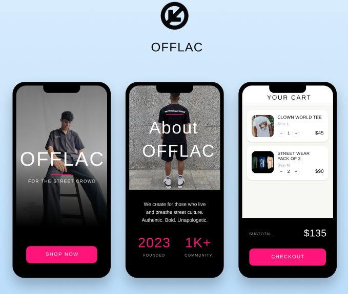

Mobile App Design
OFFLAC App
The OFFLAC App was designed for the OFFLAC startup as a mobile shopping experience that extended the brand into a more interactive digital product. Along with designing the app, I also created a launch trailer to support the brand’s rollout and present the concept in a more engaging way.

Overview
This project focused on translating the OFFLAC brand into a mobile app experience. The goal was to create a polished, stylish, and easy-to-use interface that matched the brand identity while supporting a modern shopping journey.
My Role
I designed the app concept, developed the visual direction, and created a trailer to help launch and present the app in a compelling way.
Problem
OFFLAC needed a stronger digital presence that could go beyond a website and feel more interactive, brand-forward, and engaging for users.
Process
- Explored how the OFFLAC brand could translate into mobile screens
- Focused on clean layouts and strong visual hierarchy
- Considered how users would browse products in a simple way
- Developed supporting launch material through a trailer
Solution
I created a mobile app concept that reflected the OFFLAC aesthetic while staying user-friendly and visually clear. The app was paired with a trailer to support storytelling and presentation.
Outcome
This project helped me strengthen my mobile UI design skills and think about how branding, interface design, and launch presentation can work together.